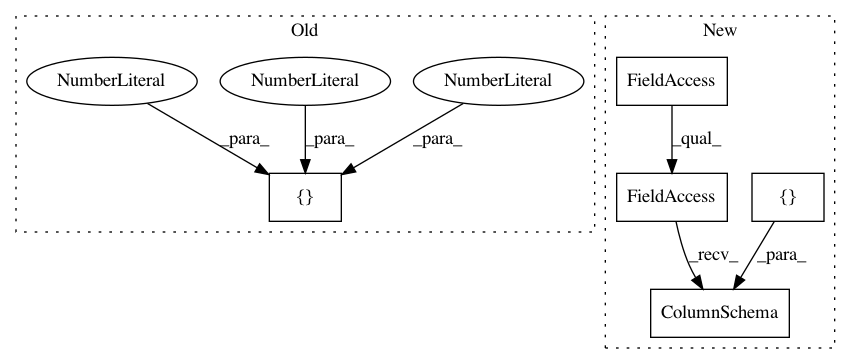

14ee57f33aa9a07fa6440c049fefd47099dbc5ae,tensorflow_transform/beam/impl_test.py,BeamImplTest,testTransformFnExportAndImportRoundtrip,#BeamImplTest#,807
Before Change
metadata = self.toMetadata({"x": tf.FixedLenFeature((), tf.float32, 0)})
columns = p | "CreateTrainingData" >> beam.Create([{
"x": v
} for v in [4, 1, 5, 2]])
with beam_impl.Context(temp_dir=self.get_temp_dir()):
_, transform_fn = (
(columns, metadata)
After Change
return {"x_scaled": tft.scale_to_0_1(inputs["x"])}
metadata = dataset_metadata.DatasetMetadata({
"x": sch.ColumnSchema(tf.float32, [], sch.FixedColumnRepresentation())
})
data = pipeline | "CreateTrainingData" >> beam.Create(
[{"x": 4}, {"x": 1}, {"x": 5}, {"x": 2}])
with beam_impl.Context(temp_dir=self.get_temp_dir()):
In pattern: SUPERPATTERN
Frequency: 3
Non-data size: 5
Instances
Project Name: tensorflow/transform
Commit Name: 14ee57f33aa9a07fa6440c049fefd47099dbc5ae
Time: 2017-04-26
Author: no-reply@google.com
File Name: tensorflow_transform/beam/impl_test.py
Class Name: BeamImplTest
Method Name: testTransformFnExportAndImportRoundtrip
Project Name: tensorflow/transform
Commit Name: 3703673d516335d7c5188b954e6bf7d123c646ba
Time: 2017-06-02
Author: no-reply@google.com
File Name: tensorflow_transform/beam/impl_test.py
Class Name: BeamImplTest
Method Name: testIntToTFIDF
Project Name: tensorflow/transform
Commit Name: 3703673d516335d7c5188b954e6bf7d123c646ba
Time: 2017-06-02
Author: no-reply@google.com
File Name: tensorflow_transform/beam/impl_test.py
Class Name: BeamImplTest
Method Name: testStringToTFIDF